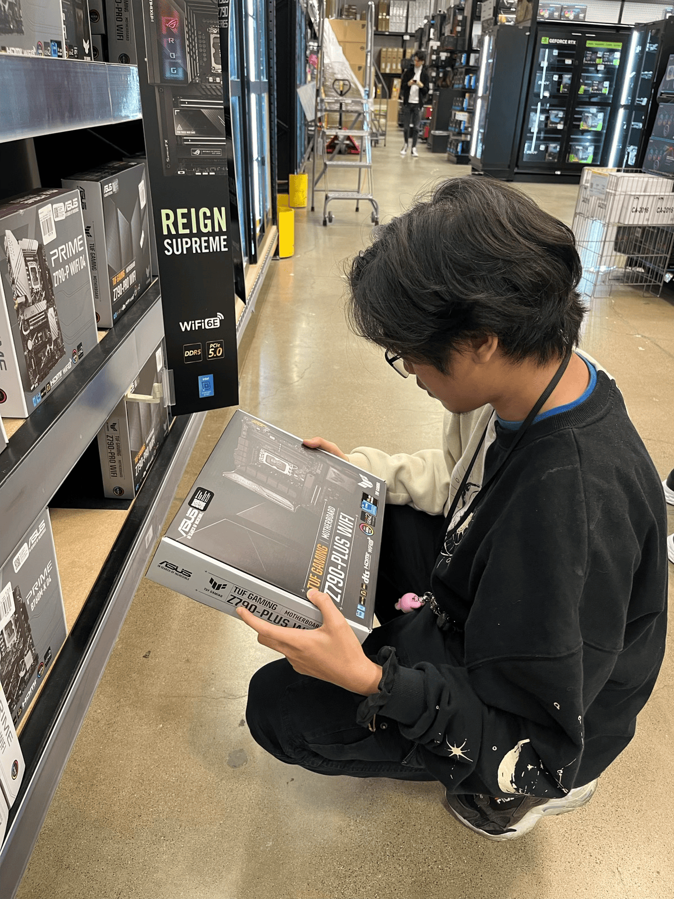

Game Dev Designer

Hello! My name is Nathan and I am a entry level software engineer. Some of my hobbies are gaming, photography and content creation. Currently pursuing a 4 year degree in computer science and transition to becoming a game developer. My passion to become a game developer is because gaming has been a big part of my childhood and it has created so many friendships and unforgettable memories that hopefully I can create a game that can do the same thing for the future generations.
Skills
Experience
Education
Games and tools I've built from scratch in C++. Every project below is on GitHub — click through to read the source.
A guessing game where the computer tries to figure out what you're thinking of. The computer's knowledge is stored as a binary tree, and every time it guesses wrong it asks you for a new question and grafts it into the tree — so the game genuinely gets smarter the more you play it. Trees can be saved to disk and reloaded later.
Node and Tree structs with recursive destructors for clean memory management-f) and help text (-h)A two-player take-away game (the classic game of Nim). Players take turns removing stones from a single pile, and whoever takes the last stone wins. The optional computer opponent plays the mathematically optimal strategy — it calculates the nim sum with an XOR across every pile and always moves to force a win when one exists.
srand for a different game every run-p), stones (-s), and computer opponent (-c)C++ is my primary language — it's what I build games and systems in. I also work in HTML, CSS, and JavaScript for the web.
Binary trees, linked structures, recursion, and dynamic memory management. I build these from scratch rather than reaching for a library.
Turn-based game loops, state management, and decision-making opponents — including provably optimal strategies based on game theory.
Responsive front-end layouts with semantic HTML and modern CSS, including Flexbox and Grid.
Git and GitHub for version control, command-line development, and building programs that take real CLI arguments.
Photography and content creation, which feed directly into UI/UX work and visual design sense.
I'm always open to talking about game development, new projects, or entry-level software engineering opportunities.
nathan112202@gmail.com
Email Me© Nathan Syhanath. Built from scratch.